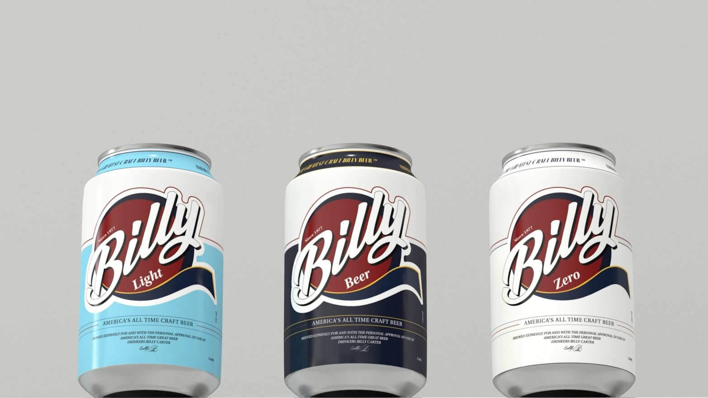

Problem & Solving
Rebranding this beer with the goal of reclaiming the brand’s increasingly forgotten and disappearing products from many people is about whether it will provide us with a new experience by bringing nostalgia to existing customers or starting with a new brand and changing everything, and it has decided to find a middle ground by combining numerous surveys and opinions. As a result, the project was carried out in the direction of partially modifying the logo in order to keep the brand’s colour identity and maintain its previous sensibility, while also establishing a more trendy and slightly moody website.
